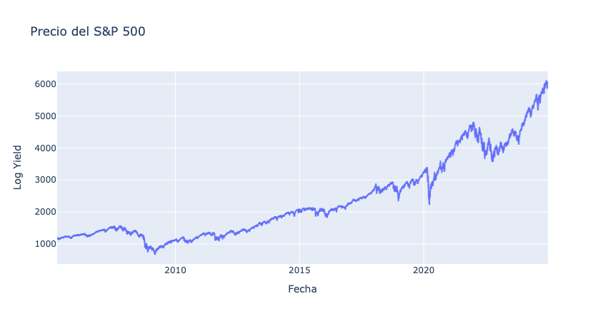
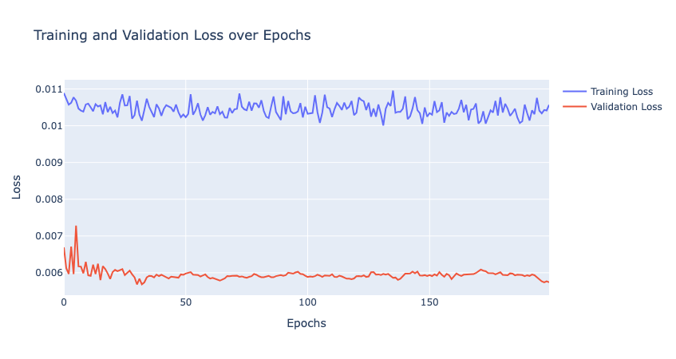
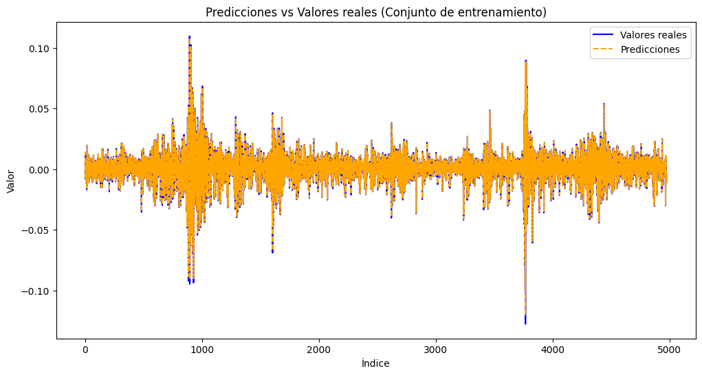
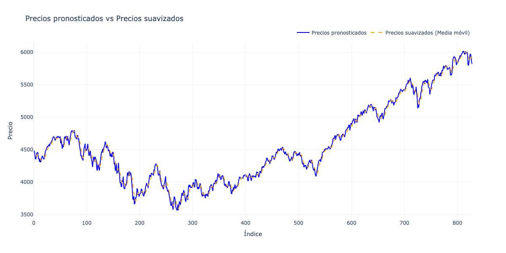

<!DOCTYPE html>


<html lang="es" data-content_root="../" >

  <head>
    <meta charset="utf-8" />
    <meta name="viewport" content="width=device-width, initial-scale=1.0" /><meta name="viewport" content="width=device-width, initial-scale=1" />

    <title>6. Redes convolucionales para series de tiempo &#8212; documentación de cursos - 1.0</title>
  
  
  
  <script data-cfasync="false">
    document.documentElement.dataset.mode = localStorage.getItem("mode") || "";
    document.documentElement.dataset.theme = localStorage.getItem("theme") || "";
  </script>
  <!--
    this give us a css class that will be invisible only if js is disabled
  -->
  <noscript>
    <style>
      .pst-js-only { display: none !important; }

    </style>
  </noscript>
  
  <!-- Loaded before other Sphinx assets -->
  <link href="../_static/styles/theme.css?digest=8878045cc6db502f8baf" rel="stylesheet" />
<link href="../_static/styles/pydata-sphinx-theme.css?digest=8878045cc6db502f8baf" rel="stylesheet" />

    <link rel="stylesheet" type="text/css" href="../_static/pygments.css?v=8f2a1f02" />
  
  <!-- So that users can add custom icons -->
  <script src="../_static/scripts/fontawesome.js?digest=8878045cc6db502f8baf"></script>
  <!-- Pre-loaded scripts that we'll load fully later -->
  <link rel="preload" as="script" href="../_static/scripts/bootstrap.js?digest=8878045cc6db502f8baf" />
<link rel="preload" as="script" href="../_static/scripts/pydata-sphinx-theme.js?digest=8878045cc6db502f8baf" />

    <script src="../_static/documentation_options.js?v=4936afed"></script>
    <script src="../_static/doctools.js?v=9bcbadda"></script>
    <script src="../_static/sphinx_highlight.js?v=dc90522c"></script>
    <script src="../_static/translations.js?v=f85f4cfb"></script>
    <script>DOCUMENTATION_OPTIONS.pagename = 'sesiones/6_convolucional';</script>
    <link rel="index" title="Índice" href="../genindex.html" />
    <link rel="search" title="Búsqueda" href="../search.html" />
    <link rel="next" title="Recursos Adicionales" href="../recursos.html" />
    <link rel="prev" title="5. Estructuras de redes profundas para series de tiempo univariadas" href="5_deeplearning.html" />
  <meta name="viewport" content="width=device-width, initial-scale=1"/>
  <meta name="docsearch:language" content="es"/>
  <meta name="docsearch:version" content="" />
  </head>
  
  
  <body data-bs-spy="scroll" data-bs-target=".bd-toc-nav" data-offset="180" data-bs-root-margin="0px 0px -60%" data-default-mode="">

  
  
  <div id="pst-skip-link" class="skip-link d-print-none"><a href="#main-content">Saltar al contenido principal</a></div>
  
  <div id="pst-scroll-pixel-helper"></div>
  
  <button type="button" class="btn rounded-pill" id="pst-back-to-top">
    <i class="fa-solid fa-arrow-up"></i>Volver arriba</button>

  
  <dialog id="pst-search-dialog">
    
<form class="bd-search d-flex align-items-center"
      action="../search.html"
      method="get">
  <i class="fa-solid fa-magnifying-glass"></i>
  <input type="search"
         class="form-control"
         name="q"
         placeholder="Search the docs ..."
         aria-label="Search the docs ..."
         autocomplete="off"
         autocorrect="off"
         autocapitalize="off"
         spellcheck="false"/>
  <span class="search-button__kbd-shortcut"><kbd class="kbd-shortcut__modifier">Ctrl</kbd>+<kbd>K</kbd></span>
</form>
  </dialog>

  <div class="pst-async-banner-revealer d-none">
  <aside id="bd-header-version-warning" class="d-none d-print-none" aria-label="Advertencia de versión"></aside>
</div>

  
    <header class="bd-header navbar navbar-expand-lg bd-navbar d-print-none">
<div class="bd-header__inner bd-page-width">
  <button class="pst-navbar-icon sidebar-toggle primary-toggle" aria-label="Navegación del sitio">
    <span class="fa-solid fa-bars"></span>
  </button>
  
  
  <div class="col-lg-3 navbar-header-items__start">
    
      <div class="navbar-item">

  
    
  

<a class="navbar-brand logo" href="../index.html">
  
  
  
  
  
  
    <p class="title logo__title">documentación de cursos - 1.0</p>
  
</a></div>
    
  </div>
  
  <div class="col-lg-9 navbar-header-items">
    
    <div class="me-auto navbar-header-items__center">
      
        <div class="navbar-item">
<nav>
  <ul class="bd-navbar-elements navbar-nav">
    
<li class="nav-item ">
  <a class="nav-link nav-internal" href="../introduccion.html">
    Introducción
  </a>
</li>


<li class="nav-item ">
  <a class="nav-link nav-internal" href="../instalacion.html">
    Instalación y Configuración
  </a>
</li>


<li class="nav-item current active">
  <a class="nav-link nav-internal" href="index.html">
    Sesiones
  </a>
</li>


<li class="nav-item ">
  <a class="nav-link nav-internal" href="../recursos.html">
    Recursos Adicionales
  </a>
</li>


<li class="nav-item ">
  <a class="nav-link nav-internal" href="../faq.html">
    Preguntas Frecuentes (FAQ)
  </a>
</li>

            <li class="nav-item dropdown">
                <button class="btn dropdown-toggle nav-item" type="button"
                data-bs-toggle="dropdown" aria-expanded="false"
                aria-controls="pst-nav-more-links">
                    More
                </button>
                <ul id="pst-nav-more-links" class="dropdown-menu">
                    
<li class=" ">
  <a class="nav-link dropdown-item nav-internal" href="../glosario.html">
    Glosario
  </a>
</li>

                </ul>
            </li>
            
  </ul>
</nav></div>
      
    </div>
    
    
    <div class="navbar-header-items__end">
      
        <div class="navbar-item navbar-persistent--container">
          

<button class="btn search-button-field search-button__button pst-js-only" title="Búsqueda" aria-label="Búsqueda" data-bs-placement="bottom" data-bs-toggle="tooltip">
 <i class="fa-solid fa-magnifying-glass"></i>
 <span class="search-button__default-text">Búsqueda</span>
 <span class="search-button__kbd-shortcut"><kbd class="kbd-shortcut__modifier">Ctrl</kbd>+<kbd class="kbd-shortcut__modifier">K</kbd></span>
</button>
        </div>
      
      
        <div class="navbar-item"><ul class="navbar-icon-links"
    aria-label="Icon Links">
        <li class="nav-item">
          
          
          
          
          
          
          
          
          <a href="https://github.com/Nataliaprins/SeriesTemporalesDeepLearning" title="GitHub" class="nav-link pst-navbar-icon" rel="noopener" target="_blank" data-bs-toggle="tooltip" data-bs-placement="bottom"><i class="fa-brands fa-square-github fa-lg" aria-hidden="true"></i>
            <span class="sr-only">GitHub</span></a>
        </li>
</ul></div>
      
    </div>
    
  </div>
  
  
    <div class="navbar-persistent--mobile">

<button class="btn search-button-field search-button__button pst-js-only" title="Búsqueda" aria-label="Búsqueda" data-bs-placement="bottom" data-bs-toggle="tooltip">
 <i class="fa-solid fa-magnifying-glass"></i>
 <span class="search-button__default-text">Búsqueda</span>
 <span class="search-button__kbd-shortcut"><kbd class="kbd-shortcut__modifier">Ctrl</kbd>+<kbd class="kbd-shortcut__modifier">K</kbd></span>
</button>
    </div>
  

  
    <button class="pst-navbar-icon sidebar-toggle secondary-toggle" aria-label="En esta página">
      <span class="fa-solid fa-outdent"></span>
    </button>
  
</div>

    </header>
  

  <div class="bd-container">
    <div class="bd-container__inner bd-page-width">
      
      
      
      <dialog id="pst-primary-sidebar-modal"></dialog>
      <div id="pst-primary-sidebar" class="bd-sidebar-primary bd-sidebar">
        

  
  <div class="sidebar-header-items sidebar-primary__section">
    
    
      <div class="sidebar-header-items__center">
        
          
          
            <div class="navbar-item">
<nav>
  <ul class="bd-navbar-elements navbar-nav">
    
<li class="nav-item ">
  <a class="nav-link nav-internal" href="../introduccion.html">
    Introducción
  </a>
</li>


<li class="nav-item ">
  <a class="nav-link nav-internal" href="../instalacion.html">
    Instalación y Configuración
  </a>
</li>


<li class="nav-item current active">
  <a class="nav-link nav-internal" href="index.html">
    Sesiones
  </a>
</li>


<li class="nav-item ">
  <a class="nav-link nav-internal" href="../recursos.html">
    Recursos Adicionales
  </a>
</li>


<li class="nav-item ">
  <a class="nav-link nav-internal" href="../faq.html">
    Preguntas Frecuentes (FAQ)
  </a>
</li>


<li class="nav-item ">
  <a class="nav-link nav-internal" href="../glosario.html">
    Glosario
  </a>
</li>

  </ul>
</nav></div>
          
        
      </div>
    
    
    
      <div class="sidebar-header-items__end">
        
          <div class="navbar-item"><ul class="navbar-icon-links"
    aria-label="Icon Links">
        <li class="nav-item">
          
          
          
          
          
          
          
          
          <a href="https://github.com/Nataliaprins/SeriesTemporalesDeepLearning" title="GitHub" class="nav-link pst-navbar-icon" rel="noopener" target="_blank" data-bs-toggle="tooltip" data-bs-placement="bottom"><i class="fa-brands fa-square-github fa-lg" aria-hidden="true"></i>
            <span class="sr-only">GitHub</span></a>
        </li>
</ul></div>
        
      </div>
    
  </div>
  
    <div class="sidebar-primary-items__start sidebar-primary__section">
        <div class="sidebar-primary-item">
<nav class="bd-docs-nav bd-links"
     aria-label="Navegación del sección">
  <p class="bd-links__title" role="heading" aria-level="1">Navegación del sección</p>
  <div class="bd-toc-item navbar-nav"><ul class="current nav bd-sidenav">
<li class="toctree-l1"><a class="reference internal" href="1_introduccion_series_tiempo.html">1. Fundamentos de Series de Tiempo</a></li>
<li class="toctree-l1"><a class="reference internal" href="2_modelos_tradicionales.html">2. Pronósticos con Modelos Tradicionales</a></li>
<li class="toctree-l1"><a class="reference internal" href="3_MLP.html">3. MLP para series de tiempo</a></li>
<li class="toctree-l1"><a class="reference internal" href="4_mlp_model.html">4. Modelar una serie de tiempo con MLP</a></li>
<li class="toctree-l1"><a class="reference internal" href="5_deeplearning.html">5. Estructuras de redes profundas para series de tiempo univariadas</a></li>
<li class="toctree-l1 current active"><a class="current reference internal" href="#">6. Redes convolucionales para series de tiempo</a></li>
</ul>
</div>
</nav></div>
    </div>
  
  
  <div class="sidebar-primary-items__end sidebar-primary__section">
      <div class="sidebar-primary-item">
<div id="ethical-ad-placement"
      class="flat"
      data-ea-publisher="readthedocs"
      data-ea-type="readthedocs-sidebar"
      data-ea-manual="true">
</div></div>
  </div>


      </div>
      
      <main id="main-content" class="bd-main" role="main">
        
        
          <div class="bd-content">
            <div class="bd-article-container">
              
              <div class="bd-header-article d-print-none">
<div class="header-article-items header-article__inner">
  
    <div class="header-article-items__start">
      
        <div class="header-article-item">

<nav aria-label="Miga de pan" class="d-print-none">
  <ul class="bd-breadcrumbs">
    
    <li class="breadcrumb-item breadcrumb-home">
      <a href="../index.html" class="nav-link" aria-label="Inicio">
        <i class="fa-solid fa-home"></i>
      </a>
    </li>
    
    <li class="breadcrumb-item"><a href="index.html" class="nav-link">Sesiones</a></li>
    
    <li class="breadcrumb-item active" aria-current="page"><span class="ellipsis"><span class="section-number">6. </span>Redes convolucionales para series de tiempo</span></li>
  </ul>
</nav>
</div>
      
    </div>
  
  
</div>
</div>
              
              
              
                
<div id="searchbox"></div>
                <article class="bd-article">
                  
  <section id="redes-convolucionales-para-series-de-tiempo">
<h1><span class="section-number">6. </span>Redes convolucionales para series de tiempo<a class="headerlink" href="#redes-convolucionales-para-series-de-tiempo" title="Link to this heading">#</a></h1>
<div class="highlight-ipython3 notranslate"><div class="highlight"><pre><span></span><span class="c1">#leer los datos de S&amp;P500</span>
<span class="kn">import</span><span class="w"> </span><span class="nn">pandas</span><span class="w"> </span><span class="k">as</span><span class="w"> </span><span class="nn">pd</span>
<span class="n">sp500_data</span> <span class="o">=</span> <span class="n">pd</span><span class="o">.</span><span class="n">read_csv</span><span class="p">(</span><span class="s1">&#39;/Users/nataliaacevedo/SeriesTemporalesDeepLearning/datasets_taller/SP500.csv&#39;</span><span class="p">,</span> <span class="n">parse_dates</span><span class="o">=</span><span class="p">[</span><span class="s1">&#39;Date&#39;</span><span class="p">],</span> <span class="n">index_col</span><span class="o">=</span><span class="s1">&#39;Date&#39;</span><span class="p">)</span>
<span class="nb">print</span><span class="p">(</span><span class="n">sp500_data</span><span class="o">.</span><span class="n">head</span><span class="p">())</span>
</pre></div>
</div>
<div class="highlight-default notranslate"><div class="highlight"><pre><span></span>            <span class="n">log_yield</span>        <span class="n">price</span>
<span class="n">Date</span>
<span class="mi">2005</span><span class="o">-</span><span class="mi">03</span><span class="o">-</span><span class="mi">28</span>   <span class="mf">0.002438</span>  <span class="mf">1174.280029</span>
<span class="mi">2005</span><span class="o">-</span><span class="mi">03</span><span class="o">-</span><span class="mi">29</span>  <span class="o">-</span><span class="mf">0.007625</span>  <span class="mf">1165.359985</span>
<span class="mi">2005</span><span class="o">-</span><span class="mi">03</span><span class="o">-</span><span class="mi">30</span>   <span class="mf">0.013679</span>  <span class="mf">1181.410034</span>
<span class="mi">2005</span><span class="o">-</span><span class="mi">03</span><span class="o">-</span><span class="mi">31</span>  <span class="o">-</span><span class="mf">0.000694</span>  <span class="mf">1180.589966</span>
<span class="mi">2005</span><span class="o">-</span><span class="mi">04</span><span class="o">-</span><span class="mi">01</span>  <span class="o">-</span><span class="mf">0.006518</span>  <span class="mf">1172.920044</span>
</pre></div>
</div>
<div class="highlight-ipython3 notranslate"><div class="highlight"><pre><span></span><span class="kn">import</span><span class="w"> </span><span class="nn">numpy</span><span class="w"> </span><span class="k">as</span><span class="w"> </span><span class="nn">np</span>

<span class="c1"># Calcular el rendimiento logarítmico</span>
<span class="n">log_returns</span> <span class="o">=</span> <span class="n">np</span><span class="o">.</span><span class="n">log</span><span class="p">(</span><span class="n">sp500_data</span><span class="p">[</span><span class="s1">&#39;price&#39;</span><span class="p">]</span> <span class="o">/</span> <span class="n">sp500_data</span><span class="p">[</span><span class="s1">&#39;price&#39;</span><span class="p">]</span><span class="o">.</span><span class="n">shift</span><span class="p">(</span><span class="mi">1</span><span class="p">))</span>
<span class="c1"># Crear un DataFrame con los resultados</span>
<span class="n">log_returns</span> <span class="o">=</span> <span class="n">log_returns</span><span class="o">.</span><span class="n">to_frame</span><span class="p">(</span><span class="n">name</span><span class="o">=</span><span class="s2">&quot;log_yield&quot;</span><span class="p">)</span>
<span class="n">log_returns</span><span class="p">[</span><span class="s2">&quot;price&quot;</span><span class="p">]</span> <span class="o">=</span> <span class="n">sp500_data</span><span class="p">[</span><span class="s1">&#39;price&#39;</span><span class="p">]</span>
<span class="n">log_returns</span> <span class="o">=</span> <span class="n">log_returns</span><span class="o">.</span><span class="n">dropna</span><span class="p">()</span>

<span class="c1"># Save the file</span>
<span class="n">log_returns</span><span class="o">.</span><span class="n">to_csv</span><span class="p">(</span><span class="s2">&quot;/Users/nataliaacevedo/SeriesTemporalesDeepLearning/datasets_taller/SP500.csv&quot;</span><span class="p">)</span>
</pre></div>
</div>
<div class="highlight-ipython3 notranslate"><div class="highlight"><pre><span></span><span class="n">log_returns</span><span class="o">.</span><span class="n">describe</span><span class="p">()</span>
</pre></div>
</div>
<div>
<style scoped>
    .dataframe tbody tr th:only-of-type {
        vertical-align: middle;
    }

    .dataframe tbody tr th {
        vertical-align: top;
    }

    .dataframe thead th {
        text-align: right;
    }
</style>
<table border="1" class="dataframe">
  <thead>
    <tr style="text-align: right;">
      <th></th>
      <th>log_yield</th>
      <th>price</th>
    </tr>
  </thead>
  <tbody>
    <tr>
      <th>count</th>
      <td>4975.000000</td>
      <td>4975.000000</td>
    </tr>
    <tr>
      <th>mean</th>
      <td>0.000324</td>
      <td>2367.603443</td>
    </tr>
    <tr>
      <th>std</th>
      <td>0.012155</td>
      <td>1277.862566</td>
    </tr>
    <tr>
      <th>min</th>
      <td>-0.127652</td>
      <td>676.530029</td>
    </tr>
    <tr>
      <th>25%</th>
      <td>-0.004071</td>
      <td>1319.780029</td>
    </tr>
    <tr>
      <th>50%</th>
      <td>0.000725</td>
      <td>1998.979980</td>
    </tr>
    <tr>
      <th>75%</th>
      <td>0.005713</td>
      <td>3021.760010</td>
    </tr>
    <tr>
      <th>max</th>
      <td>0.109572</td>
      <td>6090.270020</td>
    </tr>
  </tbody>
</table>
</div><div class="highlight-ipython3 notranslate"><div class="highlight"><pre><span></span><span class="kn">import</span><span class="w"> </span><span class="nn">plotly.express</span><span class="w"> </span><span class="k">as</span><span class="w"> </span><span class="nn">px</span>

<span class="c1"># Crear una gráfica de línea para la serie log_yield</span>
<span class="n">fig</span> <span class="o">=</span> <span class="n">px</span><span class="o">.</span><span class="n">line</span><span class="p">(</span><span class="n">log_returns</span><span class="p">,</span> <span class="n">x</span><span class="o">=</span><span class="n">log_returns</span><span class="o">.</span><span class="n">index</span><span class="p">,</span> <span class="n">y</span><span class="o">=</span><span class="s1">&#39;price&#39;</span><span class="p">,</span> <span class="n">title</span><span class="o">=</span><span class="s1">&#39;Precio del S&amp;P 500&#39;</span><span class="p">)</span>
<span class="n">fig</span><span class="o">.</span><span class="n">update_layout</span><span class="p">(</span><span class="n">xaxis_title</span><span class="o">=</span><span class="s1">&#39;Fecha&#39;</span><span class="p">,</span> <span class="n">yaxis_title</span><span class="o">=</span><span class="s1">&#39;Log Yield&#39;</span><span class="p">)</span>
<span class="n">fig</span><span class="o">.</span><span class="n">show</span><span class="p">()</span>
</pre></div>
</div>

<div class="highlight-ipython3 notranslate"><div class="highlight"><pre><span></span><span class="c1"># Crear una gráfica de línea para la serie log_yield</span>
<span class="n">fig</span> <span class="o">=</span> <span class="n">px</span><span class="o">.</span><span class="n">line</span><span class="p">(</span><span class="n">log_returns</span><span class="p">,</span> <span class="n">x</span><span class="o">=</span><span class="n">log_returns</span><span class="o">.</span><span class="n">index</span><span class="p">,</span> <span class="n">y</span><span class="o">=</span><span class="s1">&#39;log_yield&#39;</span><span class="p">,</span> <span class="n">title</span><span class="o">=</span><span class="s1">&#39;Retornos Logarítmicos del S&amp;P 500&#39;</span><span class="p">)</span>
<span class="n">fig</span><span class="o">.</span><span class="n">update_layout</span><span class="p">(</span><span class="n">xaxis_title</span><span class="o">=</span><span class="s1">&#39;Fecha&#39;</span><span class="p">,</span> <span class="n">yaxis_title</span><span class="o">=</span><span class="s1">&#39;Log Yield&#39;</span><span class="p">)</span>
<span class="n">fig</span><span class="o">.</span><span class="n">show</span><span class="p">()</span>
</pre></div>
</div>

<div class="highlight-ipython3 notranslate"><div class="highlight"><pre><span></span><span class="nb">print</span><span class="p">(</span><span class="n">log_returns</span><span class="o">.</span><span class="n">head</span><span class="p">())</span>
</pre></div>
</div>
<div class="highlight-default notranslate"><div class="highlight"><pre><span></span>            <span class="n">log_yield</span>        <span class="n">price</span>
<span class="n">Date</span>
<span class="mi">2005</span><span class="o">-</span><span class="mi">03</span><span class="o">-</span><span class="mi">29</span>  <span class="o">-</span><span class="mf">0.007625</span>  <span class="mf">1165.359985</span>
<span class="mi">2005</span><span class="o">-</span><span class="mi">03</span><span class="o">-</span><span class="mi">30</span>   <span class="mf">0.013679</span>  <span class="mf">1181.410034</span>
<span class="mi">2005</span><span class="o">-</span><span class="mi">03</span><span class="o">-</span><span class="mi">31</span>  <span class="o">-</span><span class="mf">0.000694</span>  <span class="mf">1180.589966</span>
<span class="mi">2005</span><span class="o">-</span><span class="mi">04</span><span class="o">-</span><span class="mi">01</span>  <span class="o">-</span><span class="mf">0.006518</span>  <span class="mf">1172.920044</span>
<span class="mi">2005</span><span class="o">-</span><span class="mi">04</span><span class="o">-</span><span class="mi">04</span>   <span class="mf">0.002724</span>  <span class="mf">1176.119995</span>
</pre></div>
</div>
<section id="crear-las-secuencias">
<h2><span class="section-number">6.1. </span>Crear las secuencias<a class="headerlink" href="#crear-las-secuencias" title="Link to this heading">#</a></h2>
<div class="highlight-ipython3 notranslate"><div class="highlight"><pre><span></span><span class="kn">from</span><span class="w"> </span><span class="nn">tensorflow.keras.preprocessing.sequence</span><span class="w"> </span><span class="kn">import</span> <span class="n">pad_sequences</span> <span class="c1"># type: ignore</span>

<span class="k">def</span><span class="w"> </span><span class="nf">create_sequences_with_padding</span><span class="p">(</span><span class="n">data</span><span class="p">,</span> <span class="n">sequence_length</span><span class="p">):</span>
    <span class="n">sequences</span> <span class="o">=</span> <span class="p">[]</span>
    <span class="n">targets</span> <span class="o">=</span> <span class="p">[]</span>
    <span class="n">padded_data</span> <span class="o">=</span> <span class="n">np</span><span class="o">.</span><span class="n">pad</span><span class="p">(</span><span class="n">data</span><span class="p">,</span> <span class="p">(</span><span class="n">sequence_length</span> <span class="o">-</span> <span class="mi">1</span><span class="p">,</span> <span class="mi">0</span><span class="p">),</span> <span class="n">mode</span><span class="o">=</span><span class="s1">&#39;constant&#39;</span><span class="p">,</span> <span class="n">constant_values</span><span class="o">=</span><span class="mi">0</span><span class="p">)</span>  <span class="c1"># Agregar ceros al inicio</span>
    <span class="k">for</span> <span class="n">i</span> <span class="ow">in</span> <span class="nb">range</span><span class="p">(</span><span class="nb">len</span><span class="p">(</span><span class="n">data</span><span class="p">)):</span>  <span class="c1"># Iterar sobre todos los datos</span>
        <span class="n">seq</span> <span class="o">=</span> <span class="n">padded_data</span><span class="p">[</span><span class="n">i</span><span class="p">:</span><span class="n">i</span> <span class="o">+</span> <span class="n">sequence_length</span><span class="p">]</span>  <span class="c1"># Crear una secuencia de longitud `sequence_length`</span>
        <span class="n">target</span> <span class="o">=</span> <span class="n">data</span><span class="o">.</span><span class="n">iloc</span><span class="p">[</span><span class="n">i</span><span class="p">]</span>  <span class="c1"># El objetivo sigue siendo el valor original</span>
        <span class="n">sequences</span><span class="o">.</span><span class="n">append</span><span class="p">(</span><span class="n">seq</span><span class="p">)</span>
        <span class="n">targets</span><span class="o">.</span><span class="n">append</span><span class="p">(</span><span class="n">target</span><span class="p">)</span>
    <span class="k">return</span> <span class="n">np</span><span class="o">.</span><span class="n">array</span><span class="p">(</span><span class="n">sequences</span><span class="p">),</span> <span class="n">np</span><span class="o">.</span><span class="n">array</span><span class="p">(</span><span class="n">targets</span><span class="p">)</span>

<span class="n">sequence_length</span> <span class="o">=</span> <span class="mi">14</span>  <span class="c1"># Longitud de la secuencia</span>
<span class="n">train_sequences</span><span class="p">,</span> <span class="n">train_targets</span> <span class="o">=</span> <span class="n">create_sequences_with_padding</span><span class="p">(</span><span class="n">log_returns</span><span class="p">[</span><span class="s1">&#39;log_yield&#39;</span><span class="p">],</span> <span class="n">sequence_length</span><span class="p">)</span>

<span class="nb">print</span><span class="p">(</span><span class="s2">&quot;Número de secuencias:&quot;</span><span class="p">,</span> <span class="nb">len</span><span class="p">(</span><span class="n">train_sequences</span><span class="p">))</span>
</pre></div>
</div>
<div class="highlight-default notranslate"><div class="highlight"><pre><span></span><span class="n">Número</span> <span class="n">de</span> <span class="n">secuencias</span><span class="p">:</span> <span class="mi">4975</span>
</pre></div>
</div>
<p>Las secuencias cuando no existe el número total de datos para completar
muestras de tamaño exacto, se deben complementar. Usar padding.</p>
</section>
<section id="escalar-datos">
<h2><span class="section-number">6.2. </span>Escalar datos<a class="headerlink" href="#escalar-datos" title="Link to this heading">#</a></h2>
<div class="highlight-ipython3 notranslate"><div class="highlight"><pre><span></span><span class="kn">from</span><span class="w"> </span><span class="nn">sklearn.preprocessing</span><span class="w"> </span><span class="kn">import</span> <span class="n">MinMaxScaler</span>

<span class="c1"># Escalar las secuencias de entrada</span>
<span class="n">scaler_x</span> <span class="o">=</span> <span class="n">MinMaxScaler</span><span class="p">(</span><span class="n">feature_range</span><span class="o">=</span><span class="p">(</span><span class="o">-</span><span class="mi">1</span><span class="p">,</span> <span class="mi">1</span><span class="p">))</span>
<span class="n">X_train_scaled</span> <span class="o">=</span> <span class="n">scaler_x</span><span class="o">.</span><span class="n">fit_transform</span><span class="p">(</span><span class="n">train_sequences</span><span class="o">.</span><span class="n">reshape</span><span class="p">(</span><span class="o">-</span><span class="mi">1</span><span class="p">,</span> <span class="n">train_sequences</span><span class="o">.</span><span class="n">shape</span><span class="p">[</span><span class="o">-</span><span class="mi">1</span><span class="p">]))</span><span class="o">.</span><span class="n">reshape</span><span class="p">(</span><span class="n">train_sequences</span><span class="o">.</span><span class="n">shape</span><span class="p">)</span>

<span class="c1"># Escalar las etiquetas de salida</span>
<span class="n">scaler_y</span> <span class="o">=</span> <span class="n">MinMaxScaler</span><span class="p">(</span><span class="n">feature_range</span><span class="o">=</span><span class="p">(</span><span class="o">-</span><span class="mi">1</span><span class="p">,</span> <span class="mi">1</span><span class="p">))</span>
<span class="n">y_train_scaled</span> <span class="o">=</span> <span class="n">scaler_y</span><span class="o">.</span><span class="n">fit_transform</span><span class="p">(</span><span class="n">train_targets</span><span class="o">.</span><span class="n">reshape</span><span class="p">(</span><span class="o">-</span><span class="mi">1</span><span class="p">,</span> <span class="mi">1</span><span class="p">))</span><span class="o">.</span><span class="n">flatten</span><span class="p">()</span>


<span class="nb">print</span><span class="p">(</span><span class="s2">&quot;X_train_scaled shape:&quot;</span><span class="p">,</span> <span class="n">X_train_scaled</span><span class="o">.</span><span class="n">shape</span><span class="p">)</span>
<span class="nb">print</span><span class="p">(</span><span class="s2">&quot;y_train_scaled shape:&quot;</span><span class="p">,</span> <span class="n">y_train_scaled</span><span class="o">.</span><span class="n">shape</span><span class="p">)</span>
</pre></div>
</div>
<div class="highlight-default notranslate"><div class="highlight"><pre><span></span><span class="n">X_train_scaled</span> <span class="n">shape</span><span class="p">:</span> <span class="p">(</span><span class="mi">4975</span><span class="p">,</span> <span class="mi">14</span><span class="p">)</span>
<span class="n">y_train_scaled</span> <span class="n">shape</span><span class="p">:</span> <span class="p">(</span><span class="mi">4975</span><span class="p">,)</span>
</pre></div>
</div>
</section>
<section id="crear-el-modelo">
<h2><span class="section-number">6.3. </span>Crear el modelo<a class="headerlink" href="#crear-el-modelo" title="Link to this heading">#</a></h2>
<section id="tasa-de-aprendizaje-autoadaptativa">
<h3><span class="section-number">6.3.1. </span>Tasa de aprendizaje autoadaptativa<a class="headerlink" href="#tasa-de-aprendizaje-autoadaptativa" title="Link to this heading">#</a></h3>
<p>Ayuda al algoritmo ADAM a reducir la tasa cuando no hay mejoría en la
pérdida</p>
<div class="highlight-ipython3 notranslate"><div class="highlight"><pre><span></span><span class="kn">from</span><span class="w"> </span><span class="nn">tensorflow.keras.callbacks</span><span class="w"> </span><span class="kn">import</span> <span class="n">ReduceLROnPlateau</span> <span class="c1"># type: ignore</span>

<span class="c1"># Crear un callback para reducir la tasa de aprendizaje</span>
<span class="n">reduce_lr</span> <span class="o">=</span> <span class="n">ReduceLROnPlateau</span><span class="p">(</span>
    <span class="n">monitor</span><span class="o">=</span><span class="s1">&#39;val_loss&#39;</span><span class="p">,</span>  <span class="c1"># Métrica a monitorear</span>
    <span class="n">factor</span><span class="o">=</span><span class="mf">0.5</span><span class="p">,</span>          <span class="c1"># Factor por el cual se reduce la tasa de aprendizaje</span>
    <span class="n">patience</span><span class="o">=</span><span class="mi">5</span><span class="p">,</span>          <span class="c1"># Número de épocas sin mejora antes de reducir</span>
    <span class="n">min_lr</span><span class="o">=</span><span class="mf">1e-6</span>          <span class="c1"># Tasa de aprendizaje mínima</span>
<span class="p">)</span>
</pre></div>
</div>
</section>
<section id="estructura-minimo-viable-para-una-red-cnn-en-series-de-tiempo">
<h3><span class="section-number">6.3.2. </span>Estructura mínimo viable para una Red CNN en series de tiempo<a class="headerlink" href="#estructura-minimo-viable-para-una-red-cnn-en-series-de-tiempo" title="Link to this heading">#</a></h3>
<div class="highlight-ipython3 notranslate"><div class="highlight"><pre><span></span><span class="kn">from</span><span class="w"> </span><span class="nn">tensorflow.keras.models</span><span class="w"> </span><span class="kn">import</span> <span class="n">Sequential</span> <span class="c1"># type: ignore</span>
<span class="kn">from</span><span class="w"> </span><span class="nn">tensorflow.keras.layers</span><span class="w"> </span><span class="kn">import</span> <span class="n">Input</span><span class="p">,</span> <span class="n">Conv1D</span><span class="p">,</span> <span class="n">Dense</span><span class="p">,</span> <span class="n">Dropout</span><span class="p">,</span> <span class="n">BatchNormalization</span><span class="p">,</span> <span class="n">Flatten</span><span class="c1"># type: ignore</span>
<span class="kn">from</span><span class="w"> </span><span class="nn">tensorflow.keras.regularizers</span><span class="w"> </span><span class="kn">import</span> <span class="n">l2</span><span class="c1"># type: ignore</span>

<span class="k">def</span><span class="w"> </span><span class="nf">build_model</span><span class="p">(</span><span class="n">filters</span><span class="p">,</span> <span class="n">kernel_size</span><span class="p">,</span> <span class="n">dropout_rate</span><span class="p">,</span> <span class="n">l2_reg</span><span class="p">):</span>
    <span class="n">model</span> <span class="o">=</span> <span class="n">Sequential</span><span class="p">([</span>
        <span class="c1"># Definir explícitamente la capa de entrada</span>
        <span class="n">Input</span><span class="p">(</span><span class="n">shape</span><span class="o">=</span><span class="p">(</span><span class="n">X_train_scaled</span><span class="o">.</span><span class="n">shape</span><span class="p">[</span><span class="mi">1</span><span class="p">],</span> <span class="mi">1</span><span class="p">)),</span>  <span class="c1"># Usar sequence_length fijo  # type: ignore</span>
        <span class="c1"># Capa convolucional 1D con regularización L2</span>
        <span class="n">Conv1D</span><span class="p">(</span><span class="n">filters</span><span class="o">=</span><span class="n">filters</span><span class="p">,</span> <span class="n">kernel_size</span><span class="o">=</span><span class="n">kernel_size</span><span class="p">,</span> <span class="n">activation</span><span class="o">=</span><span class="s1">&#39;relu&#39;</span><span class="p">,</span> <span class="n">kernel_regularizer</span><span class="o">=</span><span class="n">l2</span><span class="p">(</span><span class="n">l2_reg</span><span class="p">)),</span>
        <span class="n">BatchNormalization</span><span class="p">(),</span>  <span class="c1"># Normalización por lotes después de la capa convolucional</span>
        <span class="n">Dropout</span><span class="p">(</span><span class="n">dropout_rate</span><span class="p">),</span>  <span class="c1"># Regularización adicional con Dropout</span>
        <span class="c1"># Aplanar la salida para la capa densa</span>
        <span class="n">Flatten</span><span class="p">(),</span>  <span class="c1"># NECESARIO para conectar Conv1D con Dense</span>
        <span class="c1"># Capa de salida para regresión</span>
        <span class="n">Dense</span><span class="p">(</span><span class="mi">1</span><span class="p">,</span> <span class="n">activation</span><span class="o">=</span><span class="s1">&#39;linear&#39;</span><span class="p">,</span> <span class="n">kernel_regularizer</span><span class="o">=</span><span class="n">l2</span><span class="p">(</span><span class="n">l2_reg</span><span class="p">))</span>
    <span class="p">])</span>
    <span class="n">model</span><span class="o">.</span><span class="n">compile</span><span class="p">(</span><span class="n">optimizer</span><span class="o">=</span><span class="s1">&#39;adam&#39;</span><span class="p">,</span> <span class="n">loss</span><span class="o">=</span><span class="s1">&#39;mae&#39;</span><span class="p">,</span> <span class="n">metrics</span><span class="o">=</span><span class="p">[</span><span class="s1">&#39;mae&#39;</span><span class="p">])</span>
    <span class="k">return</span> <span class="n">model</span>
</pre></div>
</div>
</section>
<section id="uso-de-random-search-para-optimizacion-de-hiperparametros">
<h3><span class="section-number">6.3.3. </span>Uso de Random Search para optimización de Hiperparámetros<a class="headerlink" href="#uso-de-random-search-para-optimizacion-de-hiperparametros" title="Link to this heading">#</a></h3>
<div class="highlight-ipython3 notranslate"><div class="highlight"><pre><span></span><span class="n">param_distributions</span> <span class="o">=</span> <span class="p">{</span>
    <span class="s2">&quot;model__filters&quot;</span><span class="p">:</span> <span class="p">[</span><span class="mi">16</span><span class="p">,</span> <span class="mi">32</span><span class="p">,</span> <span class="mi">64</span><span class="p">],</span>
    <span class="s2">&quot;model__kernel_size&quot;</span><span class="p">:</span> <span class="p">[</span><span class="mi">2</span><span class="p">,</span> <span class="mi">3</span><span class="p">,</span> <span class="mi">4</span><span class="p">,</span> <span class="mi">5</span><span class="p">],</span>
    <span class="s2">&quot;model__dropout_rate&quot;</span><span class="p">:</span> <span class="p">[</span><span class="mf">0.1</span><span class="p">,</span> <span class="mf">0.2</span><span class="p">,</span> <span class="mf">0.3</span><span class="p">],</span>
    <span class="s2">&quot;model__l2_reg&quot;</span><span class="p">:</span> <span class="p">[</span><span class="mf">0.001</span><span class="p">,</span> <span class="mf">0.01</span><span class="p">,</span> <span class="mf">0.1</span><span class="p">],</span>  <span class="c1"># Intensidad de la regularización L2</span>
    <span class="s2">&quot;batch_size&quot;</span><span class="p">:</span> <span class="p">[</span><span class="mi">16</span><span class="p">,</span> <span class="mi">32</span><span class="p">,</span> <span class="mi">64</span><span class="p">],</span>
    <span class="s2">&quot;epochs&quot;</span><span class="p">:</span> <span class="p">[</span><span class="mi">20</span><span class="p">,</span> <span class="mi">30</span><span class="p">,</span> <span class="mi">40</span><span class="p">]</span>
<span class="p">}</span>
</pre></div>
</div>
<div class="highlight-ipython3 notranslate"><div class="highlight"><pre><span></span><span class="kn">from</span><span class="w"> </span><span class="nn">sklearn.model_selection</span><span class="w"> </span><span class="kn">import</span> <span class="n">RandomizedSearchCV</span>
<span class="kn">from</span><span class="w"> </span><span class="nn">sklearn.model_selection</span><span class="w"> </span><span class="kn">import</span> <span class="n">TimeSeriesSplit</span>
<span class="kn">from</span><span class="w"> </span><span class="nn">scikeras.wrappers</span><span class="w"> </span><span class="kn">import</span> <span class="n">KerasRegressor</span>

<span class="n">model_wrapper</span> <span class="o">=</span> <span class="n">KerasRegressor</span><span class="p">(</span>
    <span class="n">model</span><span class="o">=</span><span class="n">build_model</span><span class="p">,</span>
    <span class="n">verbose</span><span class="o">=</span><span class="mi">0</span><span class="p">,</span>
    <span class="n">fit__callbacks</span><span class="o">=</span><span class="p">[</span><span class="n">reduce_lr</span><span class="p">],</span>  <span class="c1"># Pasar el callback aquí</span>
    <span class="n">fit__validation_split</span><span class="o">=</span><span class="mf">0.2</span>  <span class="c1"># Usar el 20% del conjunto de entrenamiento para validación</span>
<span class="p">)</span>

<span class="c1"># Crear el objeto TimeSeriesSplit</span>
<span class="n">tscv</span> <span class="o">=</span> <span class="n">TimeSeriesSplit</span><span class="p">(</span><span class="n">n_splits</span><span class="o">=</span><span class="mi">5</span><span class="p">)</span>
<span class="nb">print</span><span class="p">(</span><span class="s2">&quot;Número de divisiones (splits):&quot;</span><span class="p">,</span> <span class="n">tscv</span><span class="o">.</span><span class="n">get_n_splits</span><span class="p">())</span>

<span class="c1"># Iterar sobre las divisiones</span>
<span class="k">for</span> <span class="n">train_index</span><span class="p">,</span> <span class="n">test_index</span> <span class="ow">in</span> <span class="n">tscv</span><span class="o">.</span><span class="n">split</span><span class="p">(</span><span class="n">X_train_scaled</span><span class="p">):</span> <span class="c1"># type: ignore</span>
    <span class="n">X_train</span><span class="p">,</span> <span class="n">X_test</span> <span class="o">=</span> <span class="n">X_train_scaled</span><span class="p">[</span><span class="n">train_index</span><span class="p">],</span> <span class="n">X_train_scaled</span><span class="p">[</span><span class="n">test_index</span><span class="p">]</span> <span class="c1"># type: ignore</span>
    <span class="n">y_train</span><span class="p">,</span> <span class="n">y_test</span> <span class="o">=</span> <span class="n">y_train_scaled</span><span class="p">[</span><span class="n">train_index</span><span class="p">],</span> <span class="n">y_train_scaled</span><span class="p">[</span><span class="n">test_index</span><span class="p">]</span> <span class="c1"># type: ignore</span>

    <span class="nb">print</span><span class="p">(</span><span class="s2">&quot;Tamaño del conjunto de entrenamiento:&quot;</span><span class="p">,</span> <span class="n">X_train</span><span class="o">.</span><span class="n">shape</span><span class="p">,</span> <span class="n">y_train</span><span class="o">.</span><span class="n">shape</span><span class="p">)</span>
</pre></div>
</div>
<div class="highlight-default notranslate"><div class="highlight"><pre><span></span><span class="n">Número</span> <span class="n">de</span> <span class="n">divisiones</span> <span class="p">(</span><span class="n">splits</span><span class="p">):</span> <span class="mi">5</span>
<span class="n">Tamaño</span> <span class="k">del</span> <span class="n">conjunto</span> <span class="n">de</span> <span class="n">entrenamiento</span><span class="p">:</span> <span class="p">(</span><span class="mi">830</span><span class="p">,</span> <span class="mi">14</span><span class="p">)</span> <span class="p">(</span><span class="mi">830</span><span class="p">,)</span>
<span class="n">Tamaño</span> <span class="k">del</span> <span class="n">conjunto</span> <span class="n">de</span> <span class="n">entrenamiento</span><span class="p">:</span> <span class="p">(</span><span class="mi">1659</span><span class="p">,</span> <span class="mi">14</span><span class="p">)</span> <span class="p">(</span><span class="mi">1659</span><span class="p">,)</span>
<span class="n">Tamaño</span> <span class="k">del</span> <span class="n">conjunto</span> <span class="n">de</span> <span class="n">entrenamiento</span><span class="p">:</span> <span class="p">(</span><span class="mi">2488</span><span class="p">,</span> <span class="mi">14</span><span class="p">)</span> <span class="p">(</span><span class="mi">2488</span><span class="p">,)</span>
<span class="n">Tamaño</span> <span class="k">del</span> <span class="n">conjunto</span> <span class="n">de</span> <span class="n">entrenamiento</span><span class="p">:</span> <span class="p">(</span><span class="mi">3317</span><span class="p">,</span> <span class="mi">14</span><span class="p">)</span> <span class="p">(</span><span class="mi">3317</span><span class="p">,)</span>
<span class="n">Tamaño</span> <span class="k">del</span> <span class="n">conjunto</span> <span class="n">de</span> <span class="n">entrenamiento</span><span class="p">:</span> <span class="p">(</span><span class="mi">4146</span><span class="p">,</span> <span class="mi">14</span><span class="p">)</span> <span class="p">(</span><span class="mi">4146</span><span class="p">,)</span>
</pre></div>
</div>
<div class="highlight-ipython3 notranslate"><div class="highlight"><pre><span></span><span class="n">random_search</span> <span class="o">=</span> <span class="n">RandomizedSearchCV</span><span class="p">(</span>
    <span class="n">estimator</span><span class="o">=</span><span class="n">model_wrapper</span><span class="p">,</span>
    <span class="n">param_distributions</span><span class="o">=</span><span class="n">param_distributions</span><span class="p">,</span>
    <span class="n">n_iter</span><span class="o">=</span><span class="mi">20</span><span class="p">,</span>  <span class="c1"># Número de combinaciones a probar</span>
    <span class="n">cv</span><span class="o">=</span><span class="n">tscv</span><span class="p">,</span>  <span class="c1"># Validación cruzada específica para series temporales</span>
    <span class="n">verbose</span><span class="o">=</span><span class="mi">0</span><span class="p">,</span>
    <span class="n">n_jobs</span><span class="o">=-</span><span class="mi">1</span>  <span class="c1"># Usar todos los núcleos disponibles</span>
<span class="p">)</span>

<span class="c1"># Ajustar la búsqueda aleatoria con los datos de entrenamiento</span>
<span class="n">random_search</span><span class="o">.</span><span class="n">fit</span><span class="p">(</span><span class="n">X_train_scaled</span><span class="p">,</span> <span class="n">y_train_scaled</span><span class="p">,</span> <span class="n">verbose</span><span class="o">=</span><span class="mi">0</span><span class="p">)</span> <span class="c1"># type: ignore</span>

<span class="nb">print</span><span class="p">(</span><span class="s2">&quot;Mejores hiperparámetros encontrados:&quot;</span><span class="p">,</span> <span class="n">random_search</span><span class="o">.</span><span class="n">best_params_</span><span class="p">)</span>
</pre></div>
</div>
<div class="highlight-default notranslate"><div class="highlight"><pre><span></span><span class="n">Mejores</span> <span class="n">hiperparámetros</span> <span class="n">encontrados</span><span class="p">:</span> <span class="p">{</span><span class="s1">&#39;model__l2_reg&#39;</span><span class="p">:</span> <span class="mf">0.1</span><span class="p">,</span> <span class="s1">&#39;model__kernel_size&#39;</span><span class="p">:</span> <span class="mi">3</span><span class="p">,</span> <span class="s1">&#39;model__filters&#39;</span><span class="p">:</span> <span class="mi">64</span><span class="p">,</span> <span class="s1">&#39;model__dropout_rate&#39;</span><span class="p">:</span> <span class="mf">0.1</span><span class="p">,</span> <span class="s1">&#39;epochs&#39;</span><span class="p">:</span> <span class="mi">40</span><span class="p">,</span> <span class="s1">&#39;batch_size&#39;</span><span class="p">:</span> <span class="mi">16</span><span class="p">}</span>
</pre></div>
</div>
<div class="highlight-ipython3 notranslate"><div class="highlight"><pre><span></span><span class="kn">from</span><span class="w"> </span><span class="nn">sklearn.model_selection</span><span class="w"> </span><span class="kn">import</span> <span class="n">train_test_split</span>


<span class="c1"># Ajustar con el mejor modelo los datos escalado de entrenamiento</span>
<span class="n">best_model</span> <span class="o">=</span> <span class="n">random_search</span><span class="o">.</span><span class="n">best_estimator_</span><span class="o">.</span><span class="n">model_</span>

<span class="c1"># Entrenar el modelo con el programador de tasas de aprendizaje</span>
<span class="n">history</span> <span class="o">=</span> <span class="n">best_model</span><span class="o">.</span><span class="n">fit</span><span class="p">(</span>
    <span class="n">X_train_scaled</span><span class="p">,</span> <span class="n">y_train_scaled</span><span class="p">,</span> <span class="c1"># type: ignore</span>
    <span class="n">validation_split</span><span class="o">=</span><span class="mf">0.2</span><span class="p">,</span>
       <span class="n">epochs</span><span class="o">=</span><span class="mi">200</span><span class="p">,</span>
    <span class="n">batch_size</span><span class="o">=</span><span class="mi">32</span><span class="p">,</span>
    <span class="n">callbacks</span><span class="o">=</span><span class="p">[</span><span class="n">reduce_lr</span><span class="p">]</span>
<span class="p">)</span>

<span class="c1"># El historial de entrenamiento está en history.history</span>
<span class="kn">import</span><span class="w"> </span><span class="nn">plotly.graph_objects</span><span class="w"> </span><span class="k">as</span><span class="w"> </span><span class="nn">go</span>

<span class="n">fig</span> <span class="o">=</span> <span class="n">go</span><span class="o">.</span><span class="n">Figure</span><span class="p">()</span>
<span class="n">fig</span><span class="o">.</span><span class="n">add_trace</span><span class="p">(</span><span class="n">go</span><span class="o">.</span><span class="n">Scatter</span><span class="p">(</span><span class="n">y</span><span class="o">=</span><span class="n">history</span><span class="o">.</span><span class="n">history</span><span class="p">[</span><span class="s1">&#39;loss&#39;</span><span class="p">],</span> <span class="n">mode</span><span class="o">=</span><span class="s1">&#39;lines&#39;</span><span class="p">,</span> <span class="n">name</span><span class="o">=</span><span class="s1">&#39;Training Loss&#39;</span><span class="p">))</span>
<span class="n">fig</span><span class="o">.</span><span class="n">add_trace</span><span class="p">(</span><span class="n">go</span><span class="o">.</span><span class="n">Scatter</span><span class="p">(</span><span class="n">y</span><span class="o">=</span><span class="n">history</span><span class="o">.</span><span class="n">history</span><span class="p">[</span><span class="s1">&#39;val_loss&#39;</span><span class="p">],</span> <span class="n">mode</span><span class="o">=</span><span class="s1">&#39;lines&#39;</span><span class="p">,</span> <span class="n">name</span><span class="o">=</span><span class="s1">&#39;Validation Loss&#39;</span><span class="p">))</span>
<span class="n">fig</span><span class="o">.</span><span class="n">update_layout</span><span class="p">(</span><span class="n">title</span><span class="o">=</span><span class="s1">&#39;Training and Validation Loss over Epochs&#39;</span><span class="p">,</span>
                  <span class="n">xaxis_title</span><span class="o">=</span><span class="s1">&#39;Epochs&#39;</span><span class="p">,</span>
                  <span class="n">yaxis_title</span><span class="o">=</span><span class="s1">&#39;Loss&#39;</span><span class="p">)</span>
<span class="n">fig</span><span class="o">.</span><span class="n">show</span><span class="p">()</span>
</pre></div>
</div>

<div class="highlight-default notranslate"><div class="highlight"><pre><span></span>Epoch 1/200
125/125 ━━━━━━━━━━━━━━━━━━━━ 0s 1ms/step - loss: 0.0109 - mae: 0.0062 - val_loss: 0.0067 - val_mae: 0.0021 - learning_rate: 6.2500e-05
Epoch 2/200
125/125 ━━━━━━━━━━━━━━━━━━━━ 0s 1ms/step - loss: 0.0107 - mae: 0.0061 - val_loss: 0.0061 - val_mae: 0.0014 - learning_rate: 6.2500e-05
Epoch 3/200
125/125 ━━━━━━━━━━━━━━━━━━━━ 0s 1ms/step - loss: 0.0106 - mae: 0.0059 - val_loss: 0.0060 - val_mae: 0.0013 - learning_rate: 6.2500e-05
Epoch 4/200
125/125 ━━━━━━━━━━━━━━━━━━━━ 0s 1ms/step - loss: 0.0106 - mae: 0.0060 - val_loss: 0.0067 - val_mae: 0.0021 - learning_rate: 6.2500e-05
Epoch 5/200
125/125 ━━━━━━━━━━━━━━━━━━━━ 0s 1ms/step - loss: 0.0108 - mae: 0.0061 - val_loss: 0.0060 - val_mae: 0.0013 - learning_rate: 6.2500e-05
Epoch 6/200
125/125 ━━━━━━━━━━━━━━━━━━━━ 0s 1ms/step - loss: 0.0107 - mae: 0.0060 - val_loss: 0.0073 - val_mae: 0.0026 - learning_rate: 6.2500e-05
Epoch 198/200
125/125 ━━━━━━━━━━━━━━━━━━━━ 0s 1ms/step - loss: 0.0104 - mae: 0.0058 - val_loss: 0.0057 - val_mae: 0.0011 - learning_rate: 1.0000e-06
Epoch 199/200
125/125 ━━━━━━━━━━━━━━━━━━━━ 0s 1ms/step - loss: 0.0104 - mae: 0.0058 - val_loss: 0.0058 - val_mae: 0.0012 - learning_rate: 1.0000e-06
Epoch 200/200
125/125 ━━━━━━━━━━━━━━━━━━━━ 0s 1ms/step - loss: 0.0106 - mae: 0.0060 - val_loss: 0.0057 - val_mae: 0.0011 - learning_rate: 1.0000e-06
</pre></div>
</div>
</section>
<section id="predicciones-en-el-entrenamiento">
<h3><span class="section-number">6.3.4. </span>Predicciones en el entrenamiento<a class="headerlink" href="#predicciones-en-el-entrenamiento" title="Link to this heading">#</a></h3>
<div class="highlight-ipython3 notranslate"><div class="highlight"><pre><span></span><span class="kn">import</span><span class="w"> </span><span class="nn">matplotlib.pyplot</span><span class="w"> </span><span class="k">as</span><span class="w"> </span><span class="nn">plt</span>

<span class="c1"># Predecir los valores en el conjunto de entrenamiento</span>
<span class="n">train_predictions_scaled</span> <span class="o">=</span> <span class="n">best_model</span><span class="o">.</span><span class="n">predict</span><span class="p">(</span><span class="n">X_train_scaled</span><span class="p">)</span> <span class="c1"># type: ignore</span>

<span class="c1"># Desescalar las predicciones y los valores reales</span>
<span class="n">train_predictions</span> <span class="o">=</span> <span class="n">scaler_y</span><span class="o">.</span><span class="n">inverse_transform</span><span class="p">(</span><span class="n">train_predictions_scaled</span><span class="o">.</span><span class="n">reshape</span><span class="p">(</span><span class="o">-</span><span class="mi">1</span><span class="p">,</span> <span class="mi">1</span><span class="p">))</span><span class="o">.</span><span class="n">flatten</span><span class="p">()</span> <span class="c1"># type: ignore</span>
<span class="n">train_actual</span> <span class="o">=</span> <span class="n">scaler_y</span><span class="o">.</span><span class="n">inverse_transform</span><span class="p">(</span><span class="n">y_train_scaled</span><span class="o">.</span><span class="n">reshape</span><span class="p">(</span><span class="o">-</span><span class="mi">1</span><span class="p">,</span> <span class="mi">1</span><span class="p">))</span><span class="o">.</span><span class="n">flatten</span><span class="p">()</span> <span class="c1"># type: ignore</span>

<span class="c1"># Graficar las predicciones frente a los valores reales</span>
<span class="n">plt</span><span class="o">.</span><span class="n">figure</span><span class="p">(</span><span class="n">figsize</span><span class="o">=</span><span class="p">(</span><span class="mi">12</span><span class="p">,</span> <span class="mi">6</span><span class="p">))</span>
<span class="n">plt</span><span class="o">.</span><span class="n">plot</span><span class="p">(</span><span class="n">train_actual</span><span class="p">,</span> <span class="n">label</span><span class="o">=</span><span class="s2">&quot;Valores reales&quot;</span><span class="p">,</span> <span class="n">color</span><span class="o">=</span><span class="s2">&quot;blue&quot;</span><span class="p">)</span>
<span class="n">plt</span><span class="o">.</span><span class="n">plot</span><span class="p">(</span><span class="n">train_predictions</span><span class="p">,</span> <span class="n">label</span><span class="o">=</span><span class="s2">&quot;Predicciones&quot;</span><span class="p">,</span> <span class="n">color</span><span class="o">=</span><span class="s2">&quot;orange&quot;</span><span class="p">,</span> <span class="n">linestyle</span><span class="o">=</span><span class="s2">&quot;--&quot;</span><span class="p">)</span>
<span class="n">plt</span><span class="o">.</span><span class="n">title</span><span class="p">(</span><span class="s2">&quot;Predicciones vs Valores reales (Conjunto de entrenamiento)&quot;</span><span class="p">)</span>
<span class="n">plt</span><span class="o">.</span><span class="n">xlabel</span><span class="p">(</span><span class="s2">&quot;Índice&quot;</span><span class="p">)</span>
<span class="n">plt</span><span class="o">.</span><span class="n">ylabel</span><span class="p">(</span><span class="s2">&quot;Valor&quot;</span><span class="p">)</span>
<span class="n">plt</span><span class="o">.</span><span class="n">legend</span><span class="p">()</span>
<span class="n">plt</span><span class="o">.</span><span class="n">show</span><span class="p">()</span>
</pre></div>
</div>
<div class="highlight-default notranslate"><div class="highlight"><pre><span></span>156/156 ━━━━━━━━━━━━━━━━━━━━ 0s 484us/step
</pre></div>
</div>

</section>
<section id="predicciones-en-test">
<h3><span class="section-number">6.3.5. </span>Predicciones en Test<a class="headerlink" href="#predicciones-en-test" title="Link to this heading">#</a></h3>
<div class="highlight-ipython3 notranslate"><div class="highlight"><pre><span></span><span class="c1"># Predecir los valores en el conjunto de prueba</span>
<span class="n">test_predictions_scaled</span> <span class="o">=</span> <span class="n">best_model</span><span class="o">.</span><span class="n">predict</span><span class="p">(</span><span class="n">X_train_scaled</span><span class="p">[</span><span class="n">test_index</span><span class="p">])</span>

<span class="c1"># Desescalar las predicciones y los valores reales</span>
<span class="n">test_predictions</span> <span class="o">=</span> <span class="n">scaler_y</span><span class="o">.</span><span class="n">inverse_transform</span><span class="p">(</span><span class="n">test_predictions_scaled</span><span class="o">.</span><span class="n">reshape</span><span class="p">(</span><span class="o">-</span><span class="mi">1</span><span class="p">,</span> <span class="mi">1</span><span class="p">))</span><span class="o">.</span><span class="n">flatten</span><span class="p">()</span>
<span class="n">test_actual</span> <span class="o">=</span> <span class="n">scaler_y</span><span class="o">.</span><span class="n">inverse_transform</span><span class="p">(</span><span class="n">y_test</span><span class="o">.</span><span class="n">reshape</span><span class="p">(</span><span class="o">-</span><span class="mi">1</span><span class="p">,</span> <span class="mi">1</span><span class="p">))</span><span class="o">.</span><span class="n">flatten</span><span class="p">()</span>

<span class="c1"># Graficar las predicciones frente a los valores reales</span>
<span class="n">plt</span><span class="o">.</span><span class="n">figure</span><span class="p">(</span><span class="n">figsize</span><span class="o">=</span><span class="p">(</span><span class="mi">12</span><span class="p">,</span> <span class="mi">6</span><span class="p">))</span>
<span class="n">plt</span><span class="o">.</span><span class="n">plot</span><span class="p">(</span><span class="n">test_actual</span><span class="p">,</span> <span class="n">label</span><span class="o">=</span><span class="s2">&quot;Valores reales&quot;</span><span class="p">,</span> <span class="n">color</span><span class="o">=</span><span class="s2">&quot;blue&quot;</span><span class="p">)</span>
<span class="n">plt</span><span class="o">.</span><span class="n">plot</span><span class="p">(</span><span class="n">test_predictions</span><span class="p">,</span> <span class="n">label</span><span class="o">=</span><span class="s2">&quot;Predicciones&quot;</span><span class="p">,</span> <span class="n">color</span><span class="o">=</span><span class="s2">&quot;orange&quot;</span><span class="p">,</span> <span class="n">linestyle</span><span class="o">=</span><span class="s2">&quot;--&quot;</span><span class="p">)</span>
<span class="n">plt</span><span class="o">.</span><span class="n">title</span><span class="p">(</span><span class="s2">&quot;Predicciones vs Valores reales (Conjunto de prueba)&quot;</span><span class="p">)</span>
<span class="n">plt</span><span class="o">.</span><span class="n">xlabel</span><span class="p">(</span><span class="s2">&quot;Índice&quot;</span><span class="p">)</span>
<span class="n">plt</span><span class="o">.</span><span class="n">ylabel</span><span class="p">(</span><span class="s2">&quot;Valor&quot;</span><span class="p">)</span>
<span class="n">plt</span><span class="o">.</span><span class="n">legend</span><span class="p">()</span>
<span class="n">plt</span><span class="o">.</span><span class="n">show</span><span class="p">()</span>
</pre></div>
</div>
<div class="highlight-default notranslate"><div class="highlight"><pre><span></span>26/26 ━━━━━━━━━━━━━━━━━━━━ 0s 574us/step
</pre></div>
</div>

<div class="highlight-ipython3 notranslate"><div class="highlight"><pre><span></span><span class="kn">from</span><span class="w"> </span><span class="nn">sklearn.metrics</span><span class="w"> </span><span class="kn">import</span> <span class="n">mean_absolute_error</span><span class="p">,</span> <span class="n">mean_squared_error</span>

<span class="c1"># Calcular MAE y MSE</span>
<span class="n">mae</span> <span class="o">=</span> <span class="n">mean_absolute_error</span><span class="p">(</span><span class="n">test_actual</span><span class="p">,</span> <span class="n">test_predictions</span><span class="p">)</span> <span class="c1"># pyright: ignore[reportUndefinedVariable]</span>
<span class="n">mse</span> <span class="o">=</span> <span class="n">mean_squared_error</span><span class="p">(</span><span class="n">test_actual</span><span class="p">,</span> <span class="n">test_predictions</span><span class="p">)</span> <span class="c1"># pyright: ignore[reportUndefinedVariable]</span>

<span class="nb">print</span><span class="p">(</span><span class="sa">f</span><span class="s2">&quot;Error absoluto medio (MAE): </span><span class="si">{</span><span class="n">mae</span><span class="si">}</span><span class="s2">&quot;</span><span class="p">)</span>
<span class="nb">print</span><span class="p">(</span><span class="sa">f</span><span class="s2">&quot;Error cuadrático medio (MSE): </span><span class="si">{</span><span class="n">mse</span><span class="si">}</span><span class="s2">&quot;</span><span class="p">)</span>
</pre></div>
</div>
<div class="highlight-default notranslate"><div class="highlight"><pre><span></span><span class="n">Error</span> <span class="n">absoluto</span> <span class="n">medio</span> <span class="p">(</span><span class="n">MAE</span><span class="p">):</span> <span class="mf">0.00014275193203755972</span>
<span class="n">Error</span> <span class="n">cuadrático</span> <span class="n">medio</span> <span class="p">(</span><span class="n">MSE</span><span class="p">):</span> <span class="mf">3.7687280885778426e-08</span>
</pre></div>
</div>
</section>
<section id="prediccion-en-el-problema-completo">
<h3><span class="section-number">6.3.6. </span>Prediccion en el problema completo<a class="headerlink" href="#prediccion-en-el-problema-completo" title="Link to this heading">#</a></h3>
<p>Predicción del valor del Indice SP500 usando la rentabilidad
pronosticada y la media movil del precio en el conjunto de test</p>
<div class="highlight-ipython3 notranslate"><div class="highlight"><pre><span></span><span class="kn">import</span><span class="w"> </span><span class="nn">plotly.graph_objects</span><span class="w"> </span><span class="k">as</span><span class="w"> </span><span class="nn">go</span>

<span class="c1"># Calcular el precio acumulativo a partir de los rendimientos pronosticados</span>
<span class="n">initial_price</span> <span class="o">=</span> <span class="n">log_returns</span><span class="p">[</span><span class="s1">&#39;price&#39;</span><span class="p">]</span><span class="o">.</span><span class="n">iloc</span><span class="p">[</span><span class="n">train_index</span><span class="p">[</span><span class="o">-</span><span class="mi">1</span><span class="p">]]</span>  <span class="c1"># Último precio del conjunto de entrenamiento</span>
<span class="n">test_prices</span> <span class="o">=</span> <span class="p">[</span><span class="n">initial_price</span><span class="p">]</span>

<span class="k">for</span> <span class="n">ret</span> <span class="ow">in</span> <span class="n">test_predictions</span><span class="p">:</span>
    <span class="n">next_price</span> <span class="o">=</span> <span class="n">test_prices</span><span class="p">[</span><span class="o">-</span><span class="mi">1</span><span class="p">]</span> <span class="o">*</span> <span class="p">(</span><span class="mi">1</span> <span class="o">+</span> <span class="n">ret</span><span class="p">)</span>  <span class="c1"># Calcular el siguiente precio</span>
    <span class="n">test_prices</span><span class="o">.</span><span class="n">append</span><span class="p">(</span><span class="n">next_price</span><span class="p">)</span>

<span class="c1"># Convertir a un array numpy</span>
<span class="n">test_prices</span> <span class="o">=</span> <span class="n">np</span><span class="o">.</span><span class="n">array</span><span class="p">(</span><span class="n">test_prices</span><span class="p">[</span><span class="mi">1</span><span class="p">:])</span>  <span class="c1"># Excluir el precio inicial</span>

<span class="c1"># Aplicar una media móvil</span>
<span class="n">window_size</span> <span class="o">=</span> <span class="mi">5</span>  <span class="c1"># Tamaño de la ventana para la media móvil</span>
<span class="n">smoothed_prices</span> <span class="o">=</span> <span class="n">np</span><span class="o">.</span><span class="n">convolve</span><span class="p">(</span><span class="n">test_prices</span><span class="p">,</span> <span class="n">np</span><span class="o">.</span><span class="n">ones</span><span class="p">(</span><span class="n">window_size</span><span class="p">)</span><span class="o">/</span><span class="n">window_size</span><span class="p">,</span> <span class="n">mode</span><span class="o">=</span><span class="s1">&#39;valid&#39;</span><span class="p">)</span>

<span class="c1"># Crear la gráfica con Plotly</span>
<span class="n">fig</span> <span class="o">=</span> <span class="n">go</span><span class="o">.</span><span class="n">Figure</span><span class="p">()</span>

<span class="c1"># Agregar los precios pronosticados</span>
<span class="n">fig</span><span class="o">.</span><span class="n">add_trace</span><span class="p">(</span><span class="n">go</span><span class="o">.</span><span class="n">Scatter</span><span class="p">(</span>
    <span class="n">x</span><span class="o">=</span><span class="nb">list</span><span class="p">(</span><span class="nb">range</span><span class="p">(</span><span class="nb">len</span><span class="p">(</span><span class="n">test_prices</span><span class="p">))),</span>
    <span class="n">y</span><span class="o">=</span><span class="n">test_prices</span><span class="p">,</span>
    <span class="n">mode</span><span class="o">=</span><span class="s1">&#39;lines&#39;</span><span class="p">,</span>
    <span class="n">name</span><span class="o">=</span><span class="s1">&#39;Precios pronosticados&#39;</span><span class="p">,</span>
    <span class="n">line</span><span class="o">=</span><span class="nb">dict</span><span class="p">(</span><span class="n">color</span><span class="o">=</span><span class="s1">&#39;blue&#39;</span><span class="p">,</span> <span class="n">width</span><span class="o">=</span><span class="mi">2</span><span class="p">)</span>
<span class="p">))</span>

<span class="c1"># Agregar los precios suavizados (ajustar el índice x)</span>
<span class="n">fig</span><span class="o">.</span><span class="n">add_trace</span><span class="p">(</span><span class="n">go</span><span class="o">.</span><span class="n">Scatter</span><span class="p">(</span>
    <span class="n">x</span><span class="o">=</span><span class="nb">list</span><span class="p">(</span><span class="nb">range</span><span class="p">(</span><span class="n">window_size</span> <span class="o">-</span> <span class="mi">1</span><span class="p">,</span> <span class="nb">len</span><span class="p">(</span><span class="n">test_prices</span><span class="p">))),</span>
    <span class="n">y</span><span class="o">=</span><span class="n">smoothed_prices</span><span class="p">,</span>
    <span class="n">mode</span><span class="o">=</span><span class="s1">&#39;lines&#39;</span><span class="p">,</span>
    <span class="n">name</span><span class="o">=</span><span class="s1">&#39;Precios suavizados (Media móvil)&#39;</span><span class="p">,</span>
    <span class="n">line</span><span class="o">=</span><span class="nb">dict</span><span class="p">(</span><span class="n">color</span><span class="o">=</span><span class="s1">&#39;orange&#39;</span><span class="p">,</span> <span class="n">width</span><span class="o">=</span><span class="mi">2</span><span class="p">,</span> <span class="n">dash</span><span class="o">=</span><span class="s1">&#39;dash&#39;</span><span class="p">)</span>
<span class="p">))</span>

<span class="c1"># Configurar el diseño de la gráfica</span>
<span class="n">fig</span><span class="o">.</span><span class="n">update_layout</span><span class="p">(</span>
    <span class="n">title</span><span class="o">=</span><span class="s1">&#39;Precios pronosticados vs Precios suavizados&#39;</span><span class="p">,</span>
    <span class="n">xaxis_title</span><span class="o">=</span><span class="s1">&#39;Índice&#39;</span><span class="p">,</span>
    <span class="n">yaxis_title</span><span class="o">=</span><span class="s1">&#39;Precio&#39;</span><span class="p">,</span>
    <span class="n">hovermode</span><span class="o">=</span><span class="s1">&#39;x unified&#39;</span><span class="p">,</span>
    <span class="n">template</span><span class="o">=</span><span class="s1">&#39;plotly_white&#39;</span><span class="p">,</span>
    <span class="n">width</span><span class="o">=</span><span class="mi">1200</span><span class="p">,</span>
    <span class="n">height</span><span class="o">=</span><span class="mi">600</span><span class="p">,</span>
    <span class="n">legend</span><span class="o">=</span><span class="nb">dict</span><span class="p">(</span>
        <span class="n">orientation</span><span class="o">=</span><span class="s2">&quot;h&quot;</span><span class="p">,</span>
        <span class="n">yanchor</span><span class="o">=</span><span class="s2">&quot;bottom&quot;</span><span class="p">,</span>
        <span class="n">y</span><span class="o">=</span><span class="mf">1.02</span><span class="p">,</span>
        <span class="n">xanchor</span><span class="o">=</span><span class="s2">&quot;right&quot;</span><span class="p">,</span>
        <span class="n">x</span><span class="o">=</span><span class="mi">1</span>
    <span class="p">)</span>
<span class="p">)</span>

<span class="n">fig</span><span class="o">.</span><span class="n">show</span><span class="p">()</span>
</pre></div>
</div>

</section>
</section>
</section>


                </article>
              
              
              
              
              
            </div>
            
            
              
                <dialog id="pst-secondary-sidebar-modal"></dialog>
                <div id="pst-secondary-sidebar" class="bd-sidebar-secondary bd-toc"><div class="sidebar-secondary-items sidebar-secondary__inner">


  <div class="sidebar-secondary-item">
<div
    id="pst-page-navigation-heading-2"
    class="page-toc tocsection onthispage">
    <i class="fa-solid fa-list"></i> En esta página
  </div>
  <nav class="bd-toc-nav page-toc" aria-labelledby="pst-page-navigation-heading-2">
    <ul class="visible nav section-nav flex-column">
<li class="toc-h2 nav-item toc-entry"><a class="reference internal nav-link" href="#crear-las-secuencias">6.1. Crear las secuencias</a></li>
<li class="toc-h2 nav-item toc-entry"><a class="reference internal nav-link" href="#escalar-datos">6.2. Escalar datos</a></li>
<li class="toc-h2 nav-item toc-entry"><a class="reference internal nav-link" href="#crear-el-modelo">6.3. Crear el modelo</a><ul class="nav section-nav flex-column">
<li class="toc-h3 nav-item toc-entry"><a class="reference internal nav-link" href="#tasa-de-aprendizaje-autoadaptativa">6.3.1. Tasa de aprendizaje autoadaptativa</a></li>
<li class="toc-h3 nav-item toc-entry"><a class="reference internal nav-link" href="#estructura-minimo-viable-para-una-red-cnn-en-series-de-tiempo">6.3.2. Estructura mínimo viable para una Red CNN en series de tiempo</a></li>
<li class="toc-h3 nav-item toc-entry"><a class="reference internal nav-link" href="#uso-de-random-search-para-optimizacion-de-hiperparametros">6.3.3. Uso de Random Search para optimización de Hiperparámetros</a></li>
<li class="toc-h3 nav-item toc-entry"><a class="reference internal nav-link" href="#predicciones-en-el-entrenamiento">6.3.4. Predicciones en el entrenamiento</a></li>
<li class="toc-h3 nav-item toc-entry"><a class="reference internal nav-link" href="#predicciones-en-test">6.3.5. Predicciones en Test</a></li>
<li class="toc-h3 nav-item toc-entry"><a class="reference internal nav-link" href="#prediccion-en-el-problema-completo">6.3.6. Prediccion en el problema completo</a></li>
</ul>
</li>
</ul>
  </nav></div>

  <div class="sidebar-secondary-item">

  
  <div class="tocsection editthispage">
    <a href="https://github.com/Nataliaprins/SeriesTemporalesDeepLearning/edit/main/docs/source/sesiones/6_convolucional.rst">
      <i class="fa-solid fa-pencil"></i>
      
      
        
          Editar en GitHub
        
      
    </a>
  </div>
</div>

  <div class="sidebar-secondary-item">
  <div role="note" aria-label="source link">
    <h3>Esta página</h3>
    <ul class="this-page-menu">
      <li><a href="../_sources/sesiones/6_convolucional.rst.txt"
            rel="nofollow">Mostrar el código</a></li>
    </ul>
   </div></div>

</div></div>
              
            
          </div>
          <footer class="bd-footer-content">
            
          </footer>
        
      </main>
    </div>
  </div>
  
  <!-- Scripts loaded after <body> so the DOM is not blocked -->
  <script defer src="../_static/scripts/bootstrap.js?digest=8878045cc6db502f8baf"></script>
<script defer src="../_static/scripts/pydata-sphinx-theme.js?digest=8878045cc6db502f8baf"></script>

  <footer class="bd-footer">
<div class="bd-footer__inner bd-page-width">
  
    <div class="footer-items__start">
      
        <div class="footer-item">

  <p class="copyright">
    
      © Copyright 2025, Natalia Acevedo Prins.
      <br/>
    
  </p>
</div>
      
        <div class="footer-item">

  <p class="sphinx-version">
    Creado usando <a href="https://www.sphinx-doc.org/">Sphinx</a> 8.2.3.
    <br/>
  </p>
</div>
      
    </div>
  
  
  
    <div class="footer-items__end">
      
        <div class="footer-item">
<p class="theme-version">
  <!-- # L10n: Setting the PST URL as an argument as this does not need to be localized -->
  Construido con el <a href="https://pydata-sphinx-theme.readthedocs.io/en/stable/index.html"> Tema PyData Sphinx </a> 0.16.1.
</p></div>
      
    </div>
  
</div>

  </footer>
  </body>
</html>